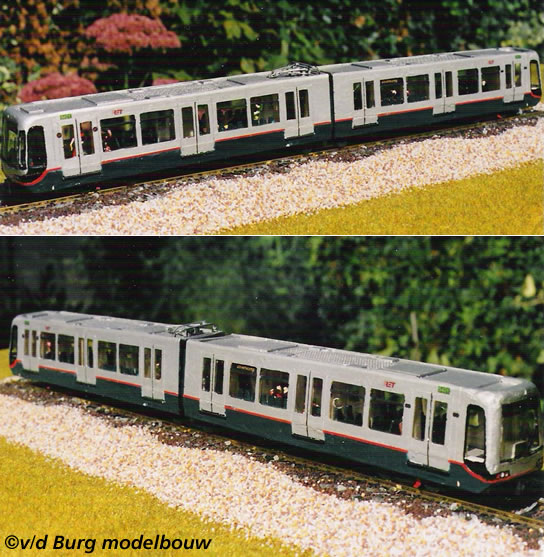
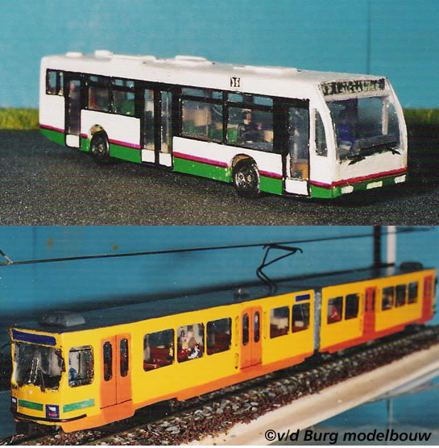

Metro rijdt in op geluidscherm en andere nieuwsfeiten...
- vrijdag 12 december 2008 17:49
- Geschreven door Joachim
Donderdagmorgen omstreeks 11.40 reed een metrodienst (569) komende vanuit station Schiedam Centrum tussen station Schiedam Centrum en Marconiplein op een geluidscherm gereden. Een deel van het geluidscherm had blijkbaar losgelaten door de harde wind en was op het spoor (2) gevallen. Om de schade zo veel mogelijk te beperken was het metrorijtuig met volle vaart over het plaatwerk gereden. Schade aan het rijtuig was er niet, maar deze werd wel buiten dienst genomen ter inspectie op station Kralingse Zoom. De wagen maakte zijn reizigersdienst wel gewoon af tot aan de Kralingse Zoom.
Er werd tijdelijk enkelsporig gereden tussen Marconiplein en Schiedam Centrum via spoor 1. Bovendien trad er nog een wisselstoring op rondom Schiedam Centrum. De vertragingen konden oplopen tot meer dan 20 minuten.
Metro in model!
De metro in mini-formaat. Voor menig metroliefhebber natuurlijk een must. V/d Burg Modelbouw is al jaren gespecialiseerd in het maken van mini-metro's, trams en bussen. Ook een groot deel van het RTM-materieel werd nagebouwd. We willen je laten zien hoe gedetailleerd en geweldig deze kleine metro's, trams en bussen eruit zien. Hieronder een impressie. Let op! Het is niet mogelijk om exemplaren te bestellen (Nee: ook niet als kerstcadeau!)
De nagebouwde versie van Type M, daaronder Kromhout-bus 770.

Serie 5400, de metrosneltram van de Calandlijn.
Type T, rijtuig 5201, daaronder een van de Schindlers die lange tijd het Rotterdams straatbeeld bepaalden.

Een RET-bus uit de 800 serie op de bovenste foto, daaronder een gedetailleerde versie van het sneltrammaterieel dat in Utrecht reed. Inmiddels zien deze rijtuigen er iets anders uit.
Beurs Veilig
Na het succes van het project 'Centraal Station Veilig' is sinds november een nieuwe proef van start gegaan: 'Beurs Veilig'. RET-personeel van station Beurs (metrobeheer) staat nu in direct contact met de meldkamer en kunnen zo nodig direct politie oproepen. Binnenkort start eenzelfde project op station Marconiplein.
Defecte trein Eendrachtsplein
Gistermorgen omstreeks 11.35 raakte er een metrotreinstel defect op station Eendrachtsplein spoor 2. Er werd geruime tijd enkelspoorbedrijf gereden tussen de wisselcomplexen Blaak II en Dijkzigt. Het kostte enige moeite om het metrostel weg te krijgen van het Eendrachtsplein. Een vervangende wagendienst ging in dienst vanaf station Kralingse Zoom spoor 4. De vertragingen konden oplopen tot 10 minuten.
OV-Chipkaart
Het RET-personeel wordt op het moment opgeleid om volledig om te kunnen gaan met de nieuwe apparatuur die geplaatst wordt t.b.v. de OV-Chipkaart. De opleiding vindt plaats in de testruimte van de tourniquets, in station Oostplein. Er blijken nog veel onbeantwoorde vragen te zijn over de OV-Chipkaart. Binnenkort willen we hierover meer vermelden.